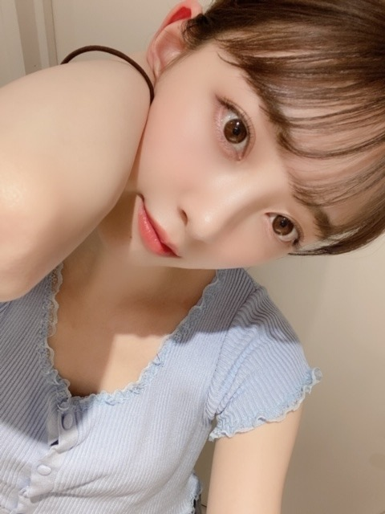
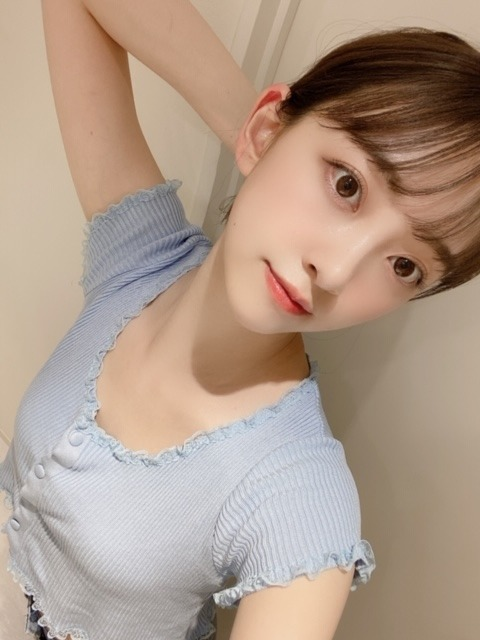

2020/0827Thu前髪おーーぷん

でんっ
おでこ広いですがお気になさらず！
家ではなるべく前髪もあげるようにしています！
肌荒れ防止、視力低下防止！
おすすめです^ - ^
昨日はFNS歌謡祭
ありがとうございました！
個人的には松田聖子さんがだいすきなので
夏の扉を歌えて幸せでした...
水色の朝、瑠璃色の地球、
母が好きな白いパラソルもいつか歌えたらいいなぁ...
本当にすてきな歌。

今日のブログ
水色尽くしです
気づきましたか？
水色がすきです
ではは
2020/08/27 12:24
コメント(297)
デコ出し可愛い！可愛い！可愛い！
顔の輪郭美しい！美しい！美しい！
いつも素敵な画像ありがとうございます。
顔の輪郭美しい！美しい！美しい！
いつも素敵な画像ありがとうございます。
未央奈推し～なの～
前髪あげるのも似合ってる♡♡
未央奈ちゃん、こんにちは。
ブログ更新ありがとう。癒されます‼
夏の扉、とっても凄く最高に可愛いかったです。上手く録画できたから、何回も見ています。
水色尽くしは、爽やかで透明感があって夏らしくて素敵です。
あ～、やっぱり未央奈ちゃんは可愛すぎます‼
乃木坂46と頑張ってるcuteでsmartな未央奈ちゃんを応援しています。
ブログ更新ありがとう。癒されます‼
夏の扉、とっても凄く最高に可愛いかったです。上手く録画できたから、何回も見ています。
水色尽くしは、爽やかで透明感があって夏らしくて素敵です。
あ～、やっぱり未央奈ちゃんは可愛すぎます‼
乃木坂46と頑張ってるcuteでsmartな未央奈ちゃんを応援しています。
真夏の全国ツアー本当に行きたかった。
未央奈の近くでサイリウム振りたい
応援してます！大好きです！
未央奈の近くでサイリウム振りたい
応援してます！大好きです！
堀ちゃんブログ更新ありがとうございます。
今日も堀ちゃん可愛いです。
堀ちゃん自分も水色がお気に入りです。
今日も暑い中お仕事お疲れ様です。
自分も今日はお仕事でした。
私はサービス業に就いて働いています。
毎日覚えることが多くて大変です。
これからもお仕事頑張って下さい。
自分も社会人一年目としてもっと頑張ります。
これからのブログを楽しみにしてます。
後堀ちゃんの生写真もたくさん集めるね。
今日も堀ちゃん可愛いです。
堀ちゃん自分も水色がお気に入りです。
今日も暑い中お仕事お疲れ様です。
自分も今日はお仕事でした。
私はサービス業に就いて働いています。
毎日覚えることが多くて大変です。
これからもお仕事頑張って下さい。
自分も社会人一年目としてもっと頑張ります。
これからのブログを楽しみにしてます。
後堀ちゃんの生写真もたくさん集めるね。
セクシーな未央奈さん好きです!
チャァオ～～!☆彡
ありゃ～～～～⤴️⤴️
プリンセスみおちゃん❕❤️❤️❤️❤️❤️笑顔❇️❇️❇️
写メ、めた～～～⤴️⤴️⤴️可愛い～～～⤴️⤴️⤴️❕❤️❤️❤️❤️❤️笑顔
愛くるしい～～ほど～～～⤴️⤴️
おに可愛い～～～⤴️⤴️⤴️❕❤️❤️❤️❤️❤️笑顔❇️❇️❇️
カワユイ、カワユイ❕❤️❤️❤️❤️❤️笑顔
みおちゃん、頑張ってねぇ～～～⤴️⤴️⤴️❕❤️❤️❤️❤️❤️笑顔❇️❇️❇️
(仕事帰りに、お店でくるぶし・足首の強固なぁ～黒の３テンバッテン式サポーターを買って、休憩場所ですぐに着けごごちを試しました～！包帯よりgoodです❕笑顔)
(＠＾▽゜＠）ゞ❤️❤️❤️
❇️❇️おすまし！⚜️❇️⭐彡
投稿ありがとうござい
前髪が〜って思ったけど
前髪がない時でも可愛いです
でも、やっぱり前髪ありの方が
僕は好きです♥
水色が多いのは気づかなかったです
そして、昨日のFNS歌謡祭見ましたよ
route246も夏の扉も凄かったです
いつ見てもやっぱり未央奈が1番可愛いです
これからも、お仕事頑張ってください
応援してます!!
次の投稿も待ってま〜す
前髪が〜って思ったけど
前髪がない時でも可愛いです
でも、やっぱり前髪ありの方が
僕は好きです♥
水色が多いのは気づかなかったです
そして、昨日のFNS歌謡祭見ましたよ
route246も夏の扉も凄かったです
いつ見てもやっぱり未央奈が1番可愛いです
これからも、お仕事頑張ってください
応援してます!!
次の投稿も待ってま〜す
ブログ更新ありがとう！
FNSみたよー！
夏の扉のときの衣装めちゃくちゃ似合ってた(^^)
FNSみたよー！
夏の扉のときの衣装めちゃくちゃ似合ってた(^^)
好き
未央奈ちゃんブログ更新ありがとう！
さくらちゃんとあやめちゃんとでんちゃんと同じ愛知県出身の愛知の覇王です！
蓮加ちゃんと同じ高校2年生です！
昨日のFNS歌謡祭見ました！
夏の扉の披露、めっちゃ良かったです！
水色の衣装、めっちゃ似合っていて、可愛いです！
もちろんRoute246の披露もめっちゃ良かったです！
これからもずっと応援するので、頑張ってください！
さくらちゃんとあやめちゃんとでんちゃんと同じ愛知県出身の愛知の覇王です！
蓮加ちゃんと同じ高校2年生です！
昨日のFNS歌謡祭見ました！
夏の扉の披露、めっちゃ良かったです！
水色の衣装、めっちゃ似合っていて、可愛いです！
もちろんRoute246の披露もめっちゃ良かったです！
これからもずっと応援するので、頑張ってください！
未央奈ちゃん、こんにちは。
水色、涼しげでイイですね。
写真全部可愛いです。
また、更新待ってます。
水色、涼しげでイイですね。
写真全部可愛いです。
また、更新待ってます。
こん～！
モバメもブログもありがとうねー(*^^*)
いつも発信してくれるのはほんと嬉しい♪
みなみちゃんとの昔の写真だったんだね、ショートだしね結べないよねー。今の時期はまだまだ暑いし良いと思う。
ロング派だけど最近どんどんショート未央奈が好きになってきてるよ！( ・∇・)
おでこ広い女の子好きだよ！俺も同じくらい広いよ！ほんとに。
てか、めっちゃおでこ綺麗だねー！美しい。。
おでこ広いひとは知性に優れてたり、運も強くて良いんだって！社会のリーダー向きでもあるらしい。
夏の扉良かったよー！未央奈すぐ見つけれた！
曲と衣装もなんだかマッチしてて良かったね！
もともと松田聖子の歌だけど、乃木坂がカバーしてても全然違和感無くて合ってたよ♪
俺も最近、未央奈の影響で水色のものとか前より好きになって見つけると反応するようになってきたよd(^-^)
明るめのも、ちょっとくすんだような暗めなものも良いよね。
モバメもブログもありがとうねー(*^^*)
いつも発信してくれるのはほんと嬉しい♪
みなみちゃんとの昔の写真だったんだね、ショートだしね結べないよねー。今の時期はまだまだ暑いし良いと思う。
ロング派だけど最近どんどんショート未央奈が好きになってきてるよ！( ・∇・)
おでこ広い女の子好きだよ！俺も同じくらい広いよ！ほんとに。
てか、めっちゃおでこ綺麗だねー！美しい。。
おでこ広いひとは知性に優れてたり、運も強くて良いんだって！社会のリーダー向きでもあるらしい。
夏の扉良かったよー！未央奈すぐ見つけれた！
曲と衣装もなんだかマッチしてて良かったね！
もともと松田聖子の歌だけど、乃木坂がカバーしてても全然違和感無くて合ってたよ♪
俺も最近、未央奈の影響で水色のものとか前より好きになって見つけると反応するようになってきたよd(^-^)
明るめのも、ちょっとくすんだような暗めなものも良いよね。
こんにちは。ブログ更新ありがとうございます。
前髪あげてオデコをだすとイメージだいぶかわりますよね。未央奈ちゃんは非常に整った顔をしているのがわかります。
FNS見ましたよ～。聖子ちゃんの曲を乃木坂46が！！時代は変わったなーと思いました。
それと水色を基調とした衣装も可愛らしかったですね。今日の写真の水色のトップスも良い色です。残暑の厳しい時期に、一服の清涼感ですね。さすがのチョイスです。
ではまた。
前髪あげてオデコをだすとイメージだいぶかわりますよね。未央奈ちゃんは非常に整った顔をしているのがわかります。
FNS見ましたよ～。聖子ちゃんの曲を乃木坂46が！！時代は変わったなーと思いました。
それと水色を基調とした衣装も可愛らしかったですね。今日の写真の水色のトップスも良い色です。残暑の厳しい時期に、一服の清涼感ですね。さすがのチョイスです。
ではまた。
昨日のFNS見ました！夏の扉凄く良かったです！
堀ちゃんってもう何でいうかどんな髪型でもどんな服装でも可愛すぎる！僕も水色大好きです！
み〜おな、大好き！
堀ちゃんってもう何でいうかどんな髪型でもどんな服装でも可愛すぎる！僕も水色大好きです！
み〜おな、大好き！
未央奈ちゃんこんばんは☺️
綺麗なおでこ
歌謡祭視たよ♪
音楽って元気をいただけるねd(⌒ー⌒)!
水色未央奈ちゃん似合うよ♪
綺麗なおでこ
歌謡祭視たよ♪
音楽って元気をいただけるねd(⌒ー⌒)!
水色未央奈ちゃん似合うよ♪
デコ広いの仲間だ！
ブログの更新ありがとう☺︎
前髪オープンした未央奈ちゃんも可愛い〜
どんな未央奈ちゃんも可愛いけどね！
今後のブログも楽しみに待ってます！
体調には気をつけてね！
応援してます！
大好きです♡
水色好きなんだね！！
自分も好きです！！
前髪オープンした未央奈ちゃんも可愛い〜
どんな未央奈ちゃんも可愛いけどね！
今後のブログも楽しみに待ってます！
体調には気をつけてね！
応援してます！
大好きです♡
水色好きなんだね！！
自分も好きです！！
髪を切った私に
違う女みたいと
あなたは少し照れたよう
前のためらいのヴェールってこれか……
(゜゜)
僕も水色好きですね。
歴代の携帯は、ほぼほぼ青で、１回だけどうしても色がなくシルバーでした。
今のスマホも、暗めの青。
今回の未央奈ちゃん、ちょいセクシーポーズ
( ＾ω＾ )
違う女みたいと
あなたは少し照れたよう
前のためらいのヴェールってこれか……
(゜゜)
僕も水色好きですね。
歴代の携帯は、ほぼほぼ青で、１回だけどうしても色がなくシルバーでした。
今のスマホも、暗めの青。
今回の未央奈ちゃん、ちょいセクシーポーズ
( ＾ω＾ )
こんばんは。
可愛いすぎです。
疲れた心身が開放され癒されて涙が出そうでした。
未央奈さんのファンでホント幸せです。
心底思いますよ！
癒しのコレクションが今日も増えて幸せです。
ありがとうございます。
コレクション見て暑さも忘れ癒されてます。
可愛いくいてくれてありがとうございます！
広いおでこも可愛いですよ、魅力の一つでもあるかな。
例えば新木優子さんも広いし、その点も魅力なのでは。
FNS歌謡祭の夏の扉はある意味衝撃的でした。
可愛いすぎで、爽やかで、清楚で、美しく魅了されましたよ。
本家を越えたのでは。
どこかに連れて行きたいです。
フルサイズで見たかったです。
今朝のめざましテレビでも紹介されてましたよ。
今日のわんこ見たさに毎回録画してるので良かったです。
また他の曲も歌えると良いですね。
水色が可愛いですよ。
夏にぴったりですね。
今日の夏空は、青く比較的鮮やかで入道雲も綺麗でしたね。
未央奈さんは、天空人ですよね。
青と白がよく似合いますね。
素敵なブログありがとうございました。
まだまだ暑いですが、お身体にはお気をつけてくださいね。
大好きですよ！
頑張って行きましょう！
可愛いすぎです。
疲れた心身が開放され癒されて涙が出そうでした。
未央奈さんのファンでホント幸せです。
心底思いますよ！
癒しのコレクションが今日も増えて幸せです。
ありがとうございます。
コレクション見て暑さも忘れ癒されてます。
可愛いくいてくれてありがとうございます！
広いおでこも可愛いですよ、魅力の一つでもあるかな。
例えば新木優子さんも広いし、その点も魅力なのでは。
FNS歌謡祭の夏の扉はある意味衝撃的でした。
可愛いすぎで、爽やかで、清楚で、美しく魅了されましたよ。
本家を越えたのでは。
どこかに連れて行きたいです。
フルサイズで見たかったです。
今朝のめざましテレビでも紹介されてましたよ。
今日のわんこ見たさに毎回録画してるので良かったです。
また他の曲も歌えると良いですね。
水色が可愛いですよ。
夏にぴったりですね。
今日の夏空は、青く比較的鮮やかで入道雲も綺麗でしたね。
未央奈さんは、天空人ですよね。
青と白がよく似合いますね。
素敵なブログありがとうございました。
まだまだ暑いですが、お身体にはお気をつけてくださいね。
大好きですよ！
頑張って行きましょう！
前髪上げると肌荒れ、視力低下防止に繋がるの？
始めて知った！
昨日のFNS歌謡祭お疲れ様！
松田聖子さんの曲を乃木坂がカバーして歌うなんて
奇跡的じゃない？
未央奈ちゃんが髪型変えたって言ってあったから
気になり見たよ！
水色尽くし
始めて知った！
昨日のFNS歌謡祭お疲れ様！
松田聖子さんの曲を乃木坂がカバーして歌うなんて
奇跡的じゃない？
未央奈ちゃんが髪型変えたって言ってあったから
気になり見たよ！
水色尽くし
堀未央奈❤こんばんは おでこの事は気にしてないよ☺
昨日は、ご苦労様❗俺は、仕事で最初から観れなかったよ(T_T)
仕事終わって帰って来てそれからご飯食べてその後は、シャワー浴びてたら９時前になっちゃったから新曲しか観れなかったよ。
未央奈可愛いかったよ(*^^*)
暑いから熱中症にもコロナにも気を付けてね(^_^)v
これからも体調にも気を付けてね(^_^)v
今日も体調に気を付けて頑張ってね(^_^)v
大好きだよ(*^^*)
昨日は、ご苦労様❗俺は、仕事で最初から観れなかったよ(T_T)
仕事終わって帰って来てそれからご飯食べてその後は、シャワー浴びてたら９時前になっちゃったから新曲しか観れなかったよ。
未央奈可愛いかったよ(*^^*)
暑いから熱中症にもコロナにも気を付けてね(^_^)v
これからも体調にも気を付けてね(^_^)v
今日も体調に気を付けて頑張ってね(^_^)v
大好きだよ(*^^*)
ブログ更新ありがとうございます(*^^)
FNS見ました すごく可愛かったです(*´ω`*)歌の番組見てると必ず未央奈ちゃんが出ているので嬉しくて親に、「未央奈ちゃんまた出てる！！ねえねえ可愛い！！」って言ってます笑
すごく可愛かったです(*´ω`*)歌の番組見てると必ず未央奈ちゃんが出ているので嬉しくて親に、「未央奈ちゃんまた出てる！！ねえねえ可愛い！！」って言ってます笑
おでこキレイな丸形で羨ましいです どんな髪型も似合うのでまたいろんなヘアスタイル見てみたいです (｡･ω･｡)
どんな髪型も似合うのでまたいろんなヘアスタイル見てみたいです (｡･ω･｡)
FNS見ました
おでこキレイな丸形で羨ましいです
未央奈ちゃんブログ更新ありがとう！未央奈ちゃんもお家では前髪あげるんだね！意外だった( °_° )FNS歌謡祭見たよ！！ショートほんとに可愛いです♥︎未央奈ちゃんは毎回可愛いを更新してくれるから推してて楽しいです！未央奈ちゃんの変化を見るのが本当に私の楽しみです！
奈央
奈央
みおな
水色って涼しげでいいよねー。
目にもいいし
水色って涼しげでいいよねー。
目にもいいし
ブログ更新ありがと〜
おでこ全然広くないよ〜
すごい綺麗‼︎
FNS歌謡祭みたよ‼︎
めちゃめちゃかわいかった！
夏の扉、すごい良かった‼︎
未央奈ちゃんは何色でも似合うなぁ…
おでこ全然広くないよ〜
すごい綺麗‼︎
FNS歌謡祭みたよ‼︎
めちゃめちゃかわいかった！
夏の扉、すごい良かった‼︎
未央奈ちゃんは何色でも似合うなぁ…
ブログ更新ありがとう^^
FNSおつかれさま、見たよ
夏の扉、私は部活で演奏したなあ
松田聖子メドレー楽しかった´`*
暑くてとけちゃいそうです、
未央奈ちゃんも身体に気をつけて
次のブログ更新も楽しみにしてるね♪
FNSおつかれさま、見たよ
夏の扉、私は部活で演奏したなあ
松田聖子メドレー楽しかった´`*
暑くてとけちゃいそうです、
未央奈ちゃんも身体に気をつけて
次のブログ更新も楽しみにしてるね♪
未央奈こんばんは‼️
今日も可愛い
昨日のFNS歌謡祭、素敵でした
夏の扉の衣装似合ってましたよー
ボブ未央奈、とっても好きです
ではでは〜
今日も可愛い
昨日のFNS歌謡祭、素敵でした
夏の扉の衣装似合ってましたよー
ボブ未央奈、とっても好きです
ではでは〜
聖子ちゃんカットもいいかも～。
いつかやってみてね。(*^-^*)
いつかやってみてね。(*^-^*)
FNS歌謡祭良かったよ！
未央奈ちゃんお疲れ様です。相変わらず未央奈ちゃんはかわいいなあ。コロナウイルスがおさまったら、バナナマンのせっかくグルメや青空レストラン、乃木坂46の食べるだけなどに出演してほしいなあ。未央奈ちゃんの美味しい物を食べてとても幸せそうな姿が１番好きだから。そして、レコメンで約束してた田村真佑ちゃんと二人で焼肉に行く実現してくださいね。そして、未央奈ちゃんの大好きな丸デブ総本店やさくらちゃんの両親がやっているお蕎麦屋さんにも行けるといいね
今回もめっちゃ可愛い！
更新待ってました〜！
水色未央奈かわいいい
FNS見たよ〜！！
次の更新も待ってるね〜
水色未央奈かわいいい
FNS見たよ〜！！
次の更新も待ってるね〜
部活終わってつたがれだあってなってる時に堀未央奈さんのブログが更新されてたりモバメ来てたり、、確認するこの時間が幸せでしかない 未央奈ちゃんいつもありがとう〜！♡
FNS観ましたよー！
『夏の扉』は個人的に聖子ちゃんの歌の中で一番好きな歌なので、嬉しかったです♪
未央奈ちゃんのおでこは綺麗ですね！
ゆでたまごみたいにツルツルですね♪☆
『夏の扉』は個人的に聖子ちゃんの歌の中で一番好きな歌なので、嬉しかったです♪
未央奈ちゃんのおでこは綺麗ですね！
ゆでたまごみたいにツルツルですね♪☆
今日の服似合ってて可愛いです！
FNS歌謡祭すごかったです！
FNS歌謡祭すごかったです！
未央奈ちゃんブログ更新ありがとう〜！！
FNS歌謡祭見たよんっ♡♡
やっぱりRoute246最高だったけど、夏の扉もめっちゃ良かった〜！！！！！
衣装も爽やかで可愛くて、ずっと嬉しかった
私も実は、小さい頃からずっと水色が好きなんだぁ❤︎
未央奈ちゃんはやっぱり何色でも似合う♡♡
またのブログを、楽しみにしています！！
またねーヾ(*´∀｀*)ﾉ！
FNS歌謡祭見たよんっ♡♡
やっぱりRoute246最高だったけど、夏の扉もめっちゃ良かった〜！！！！！
衣装も爽やかで可愛くて、ずっと嬉しかった
私も実は、小さい頃からずっと水色が好きなんだぁ❤︎
未央奈ちゃんはやっぱり何色でも似合う♡♡
またのブログを、楽しみにしています！！
またねーヾ(*´∀｀*)ﾉ！
未央奈ちゃんこんばんは！ありがとうございます‼楽しみにしてます‼頑張ります‼頑張って下さい！ありがとうございます‼頑張ります‼
未央奈ちゃん、お疲れさまです。
素敵なお洋服以上に、
前髪おーーぷんが素敵です！
綺麗ですね！
これからも頑張ってくださいね！！！
応援しています！！！
素敵なお洋服以上に、
前髪おーーぷんが素敵です！
綺麗ですね！
これからも頑張ってくださいね！！！
応援しています！！！
カワヨイです。
部活帰りに見ると癒される。未央奈大好き。
これからも頑張ってください。
部活帰りに見ると癒される。未央奈大好き。
これからも頑張ってください。
こんばんはお疲れさま☺
おでこも人各々やし✨
堀ちゃん綺麗な肌してるね✨
ゆで玉子つるんってむいたみたい✨
水色気づいたよ☺
俺も好きな色のひとつです☺
色好き嫌いあんまりないからね✨
でも、オレンジ、水色、白、黒、青。
服や鞄など仕事も普段も良く使う色。
だから好きなん☺
気づけばもう９月やね。
今年はこんな状況。
秋冬も油断出来ないね。
でもなんかね。
ライブや握手会とか乃木坂まだ参加してないから(笑)生駒ちゃんおる時から言うてる(笑)
生駒ちゃんの初舞台は観に行ったよ。
おっと話がそれた(笑)
だから、こんな時やからこそ、なんか握手会余計に行きたいな～って思いが強くなります☺
ファンのみんなもそうやと思います。
勿論堀ちゃんもそうやんね✨
ホンマに少しでも早く終息してほしいね。
でも油断は出来ないけどね。
まあ元気だしてこ～✨
ではではまたね☺
体調気をつけてくださいね。
ほなね、堀ちゃん☺
おでこも人各々やし✨
堀ちゃん綺麗な肌してるね✨
ゆで玉子つるんってむいたみたい✨
水色気づいたよ☺
俺も好きな色のひとつです☺
色好き嫌いあんまりないからね✨
でも、オレンジ、水色、白、黒、青。
服や鞄など仕事も普段も良く使う色。
だから好きなん☺
気づけばもう９月やね。
今年はこんな状況。
秋冬も油断出来ないね。
でもなんかね。
ライブや握手会とか乃木坂まだ参加してないから(笑)生駒ちゃんおる時から言うてる(笑)
生駒ちゃんの初舞台は観に行ったよ。
おっと話がそれた(笑)
だから、こんな時やからこそ、なんか握手会余計に行きたいな～って思いが強くなります☺
ファンのみんなもそうやと思います。
勿論堀ちゃんもそうやんね✨
ホンマに少しでも早く終息してほしいね。
でも油断は出来ないけどね。
まあ元気だしてこ～✨
ではではまたね☺
体調気をつけてくださいね。
ほなね、堀ちゃん☺
こんにちは、ブログ更新ありがとうございます、 あの1つ気になっているのですけど、ブログの最後に「ではは」と書いてありますけど、では、の間違いじゃあ無いですか？ 合ってたらすいません。 最後に質問●ほりさんのメイクを教えてください。
未央奈！
前髪オープン可愛いくて美しい！
惚れますね！
水色好きです。
ではでは
前髪オープン可愛いくて美しい！
惚れますね！
水色好きです。
ではでは
堀ちゃん！更新ありがとう！！
水色ブログいいね！！
夏！っ感じがします！！
前髪上げてる堀ちゃんも
めちゃいいよ！！
ボブのみおちゃん、
ほんとに似合ってるし、
好きなので今後も
続けてほしいです！！
FNSも堀ちゃん見れて
嬉しかったです！
元気貰えました！
では！
体調気を付けて過ごしてね！
次回の更新も楽しみに待ってます！
おやすみおな〜！
水色ブログいいね！！
夏！っ感じがします！！
前髪上げてる堀ちゃんも
めちゃいいよ！！
ボブのみおちゃん、
ほんとに似合ってるし、
好きなので今後も
続けてほしいです！！
FNSも堀ちゃん見れて
嬉しかったです！
元気貰えました！
では！
体調気を付けて過ごしてね！
次回の更新も楽しみに待ってます！
おやすみおな〜！
今日もブログ更新ありがとう！
ほんと更新多くて嬉しいよ。
水色似合うし可愛いよ
おでこ出してもメッチャかわいい！
ぜんぜん広くないからね。
FNS見ました
すげぇ可愛かったよ〜、最高でした。
可愛い可愛いばっかだけど
ほんとかわいいんですもんしょうがないです。
またブログ更新待ってます
ではは
ほんと更新多くて嬉しいよ。
水色似合うし可愛いよ
おでこ出してもメッチャかわいい！
ぜんぜん広くないからね。
FNS見ました
すげぇ可愛かったよ〜、最高でした。
可愛い可愛いばっかだけど
ほんとかわいいんですもんしょうがないです。
またブログ更新待ってます
ではは
未央奈ちゃんが青系の色好きだから、最近筆箱の中身が青系になってきました！蛍光ペンとかも青が多くて、お気に入りはmildlinerのくすみブルーみたいな色です！可愛いですぜひ見て見てください
ブログ更新ありがとう。fns歌謡祭見たよ。
こんにちは‼︎
ブログ更新、ありがとうございます♪
前髪オープン、いいですね‼︎
何に書いてあったか忘れちゃったけど…
前髪あり、なしのどちらがいいかについて、『おでこが広い人は、前髪を作らずにおでこを出した方がいい』って書いてあったような。
個人的には、今の未央奈の髪型、『黒髪ボブ』が一番好きなんだけど、いつか、前髪なしバージョンを試してみてもいいかもしれないですね‼︎
そうそう、FNS歌謡祭、観ましたよ♪
2つ前のブログのタイトル『ためらいのヴェール』は、伏線だったんですね‼︎
『夏の扉』のパフォーマンス、爽やかで可愛くて、最高でした♪
リアルタイムで観て、録画でも何回か観たから、サビが頭の中でループしてます(笑)。
おかげさまで、頭の中がフレッシュです‼︎
歌詞のとおり、参加メンバーも比較的フレッシュな顔ぶれでしたね‼︎(17歳のキャプテン含む・笑)
衣装も振り付けも可愛くて、メンバーの笑顔が爽やかで、全てがキラキラしてました♪
大好きな水色の衣装で、大好きな松田聖子さんの歌を歌う。
未央奈にとって、素晴らしい時間になりましたね‼︎
パフォーマンス後は、他のアーティストさんの曲も聴けたのかな？
RADWIMPSさんの『夏のせい』、いい曲ですよね〜
最近、メジャーデビュー以降の全ての楽曲のストリーミング配信を決定したけど、できれば、インディーズ時代の楽曲も配信してほしいなあ。
『なんちって』、『ヒキコモリロリン』、『夢見月に何想ふ』あたりは、本当に名曲だと思います…‼︎
さて、まだまだ暑い日が続きますが、体調に気をつけて、頑張ってください‼︎
ではでは、また。
明日も未央奈にとっていい1日になりますように♪
ブログ更新、ありがとうございます♪
前髪オープン、いいですね‼︎
何に書いてあったか忘れちゃったけど…
前髪あり、なしのどちらがいいかについて、『おでこが広い人は、前髪を作らずにおでこを出した方がいい』って書いてあったような。
個人的には、今の未央奈の髪型、『黒髪ボブ』が一番好きなんだけど、いつか、前髪なしバージョンを試してみてもいいかもしれないですね‼︎
そうそう、FNS歌謡祭、観ましたよ♪
2つ前のブログのタイトル『ためらいのヴェール』は、伏線だったんですね‼︎
『夏の扉』のパフォーマンス、爽やかで可愛くて、最高でした♪
リアルタイムで観て、録画でも何回か観たから、サビが頭の中でループしてます(笑)。
おかげさまで、頭の中がフレッシュです‼︎
歌詞のとおり、参加メンバーも比較的フレッシュな顔ぶれでしたね‼︎(17歳のキャプテン含む・笑)
衣装も振り付けも可愛くて、メンバーの笑顔が爽やかで、全てがキラキラしてました♪
大好きな水色の衣装で、大好きな松田聖子さんの歌を歌う。
未央奈にとって、素晴らしい時間になりましたね‼︎
パフォーマンス後は、他のアーティストさんの曲も聴けたのかな？
RADWIMPSさんの『夏のせい』、いい曲ですよね〜
最近、メジャーデビュー以降の全ての楽曲のストリーミング配信を決定したけど、できれば、インディーズ時代の楽曲も配信してほしいなあ。
『なんちって』、『ヒキコモリロリン』、『夢見月に何想ふ』あたりは、本当に名曲だと思います…‼︎
さて、まだまだ暑い日が続きますが、体調に気をつけて、頑張ってください‼︎
ではでは、また。
明日も未央奈にとっていい1日になりますように♪


好き！